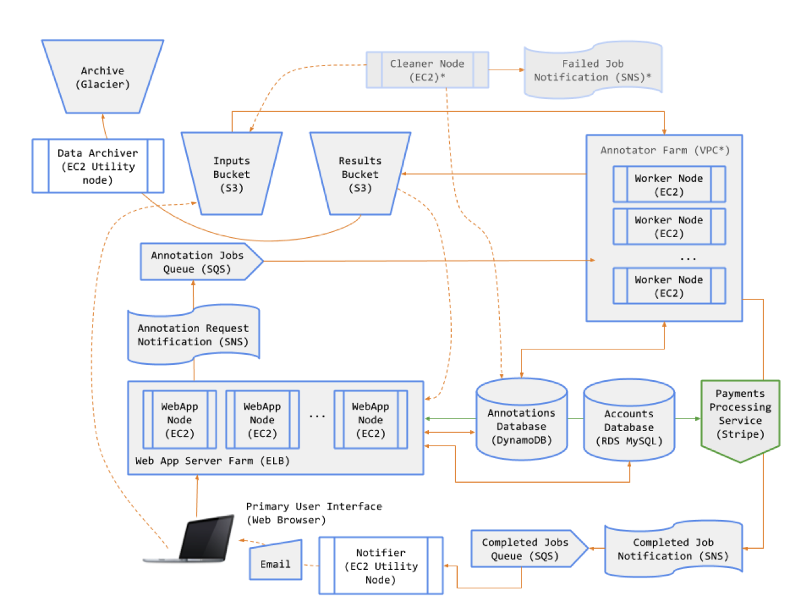
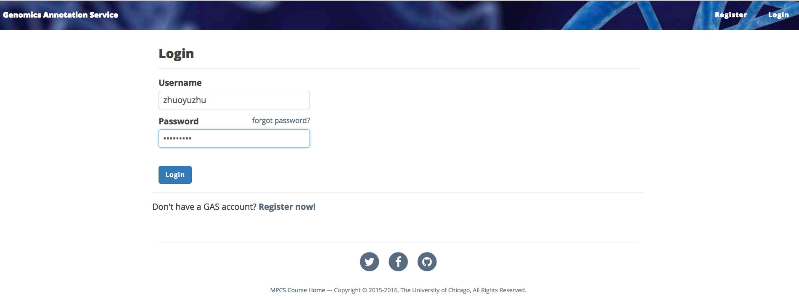
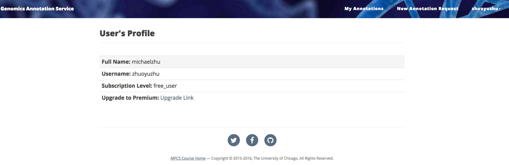
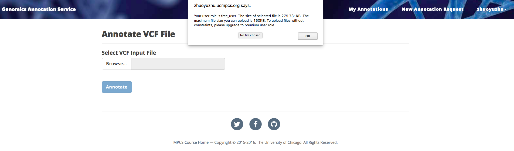
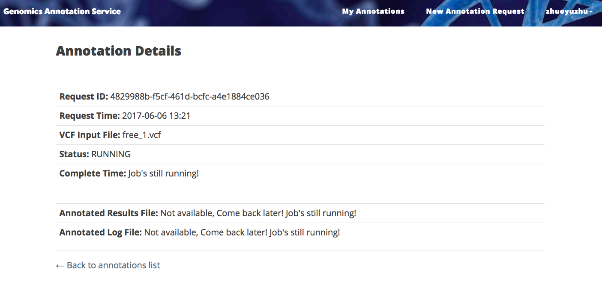
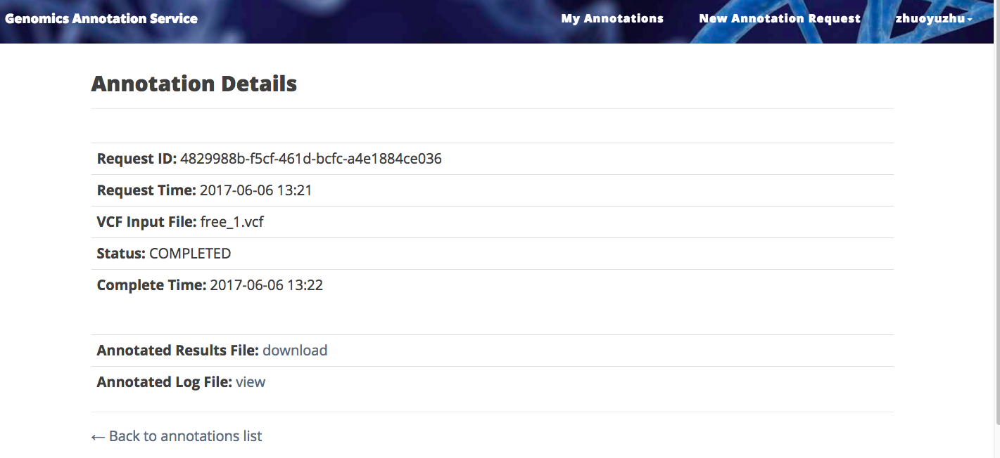
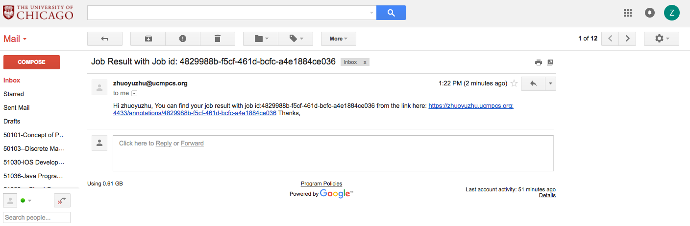
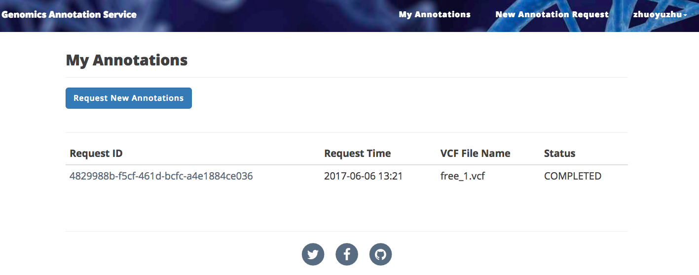
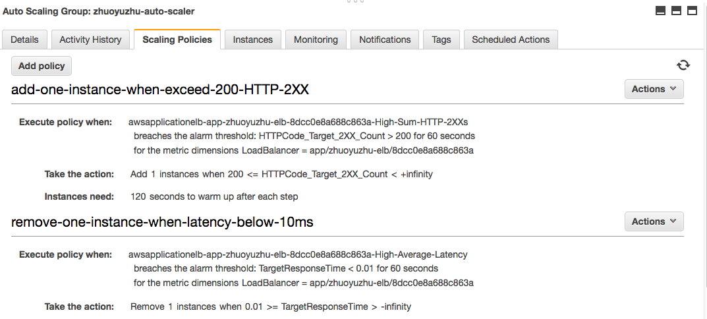
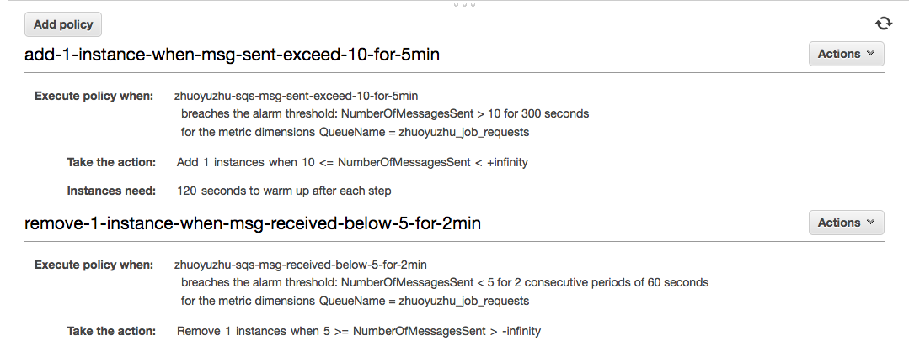

Genomics Annotation SaaS
This Genomics Annotation Software-as-a-Service enable the scientific researchers to run genomic analysis simultaneously
Key Functions:
- • Register for an account to use the service -- All users of the service must be registered. Two classes of users will be supported: Free and Premium. Premium users will have access to additional functionality, beyond that available to Free users
- • Convert from a Free to a Premium user -- Premium users will be required to provide a credit card for payment of the service subscription. The GAS will integrate with Stripe (www.stripe.com) for credit card payment processing
- • Submit an annotation job -- Free users may only submit jobs of up to a certain size. Premium users may submit any size job. If a Free user submits an oversized job, the system will refuse it and will prompt to the user to convert to a Premium user.
- • Browse jobs and download annotation results -- The GAS will store annotation results for later retrieval. All users may view a list of jobs (completed and running). Free users may download results up to 30 minutes after their job has completed; thereafter their results will be archived and only available to them if they convert to a Premium user. Premium users will have all their results available for download.
System Components:
- • An object store for input files, annotated (result) files, and job log files.
- • A key-value store for persisting information on annotation jobs
- • A cheap, highly-durable store for archiving the data of Free users.
- • A relational database for user account information, job metadata and job logs.
- • A service that runs the AnnTools software for annotation.
- • A (front end) web application for users to interact with the GAS.
- • A set of message queues and notification topics for managing various system activities.

GAS Scalability:
- 1. On the front end, the web application will be delivered by multiple servers running within a load balancer. All requests will be received at a single domain name/IP address, namely that of the load balancer. The load balancer will distribute requests across a pool of identically configured, stateless, web servers running on EC2 instances. At minimum, the load balancer will have two web server instances running across two availability zones, providing capacity and ensuring availability in the event of failure. If demand on either web server exceeds certain thresholds, the GAS will automatically launch additional web servers and place them in the load balancer pool. When demand remains below certain thresholds, the GAS will terminate the excess web servers.
- 2. On the back end, the annotator service will be delivered by multiple servers running within a separate virtual private cloud. At minimum this pool of so-called “worker nodes” will contain two nodes (EC2 instances). Additional instances will be launched and added to (or removed from) the worker pool, based on the number of requests in the job queue. The annotator servers store the state of running jobs locally (as implemented in homework assignments) -- in this sense they are not stateless like the web app servers. If a job fails to complete it will leave the system in an inconsistent state, but it’s a state from which we can recover relatively easily.
Figure 1 - User Log In Page 
Figure 2 - User Profile Page with options to upgrad using Stripe

Figure 3 - Annotation Input File Size Validation

Figure 4 - Annotation Job Running

Figure 5 - Annotation Job Complete

Figure 6 - Annotation Job Email

Figure 7 - All user's annotation job request

Figure 8 - Web server auto-scaling policy

Figure 9 - Annotatior server auto-scaling policy

For more technical details, you can get in touch with me by my eamil.